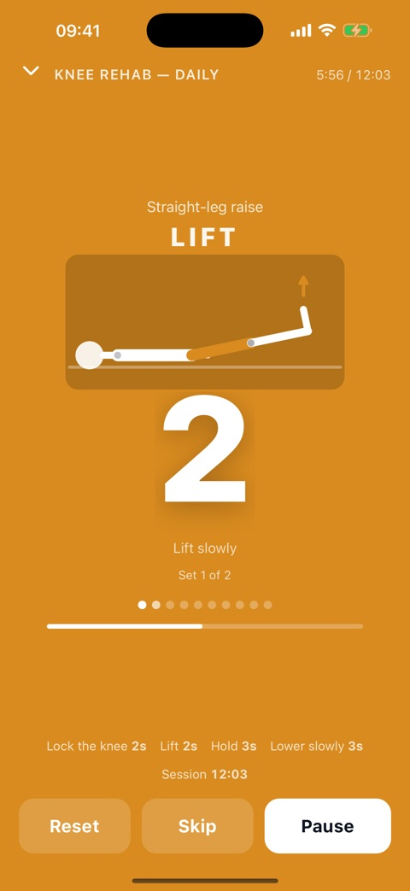
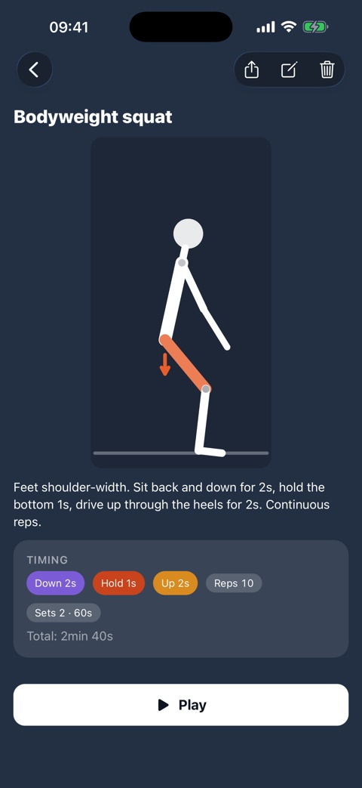
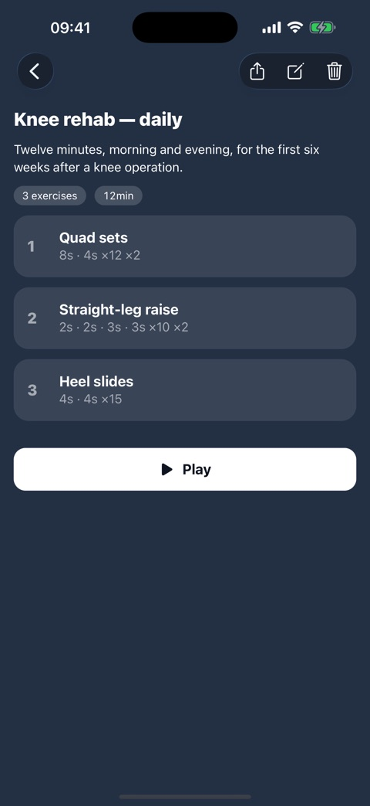
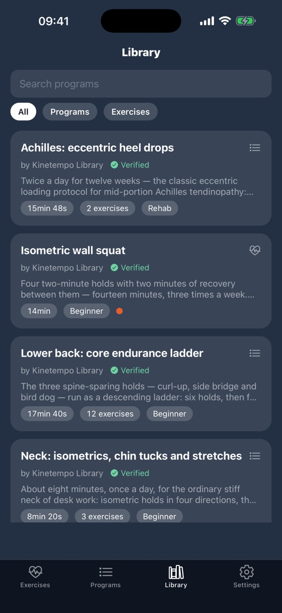

Your physio timer with a figure that moves in time with you.
Isometric holds, lift–hold–release reps, slides, plain countdowns. Follow the figure and the big countdown while the screen stays on, or lock the phone and go by sound: a distinct beep for every step, ticks before it ends.
The figure is drawn for your exercise. Standing, seated, lying down — it is joint angles moving in time with your steps, not a stock clip picked from a shortlist.
Get the appTry it in the browserBrowse the catalogMake your own in two minutes
Kinetempo is not a fixed set of workouts — it is a timer you shape, by hand or with an AI assistant. Describe the exercise in a chat and it replies with a link that adds it to the app, figure and all.
Claude and ChatGPT open with the request already written; for anything else, copy it and paste it in. The assistant needs to be able to open a link and run code — without both it sends the animation as text you can paste into the exercise by hand. Only want a figure for an exercise you already have? Point it at the animation guide instead, which needs no code at all.
SQUEEZE RELAX
Every step of a rep has its own colour, its own sound and its own pose: squeeze, lift, hold, release, move, rest. The last three seconds tick, so you read the tempo without watching the clock.
Sound keeps going when locked
Lock the phone or put it face down and the cues carry on. iOS shows the time left on the Lock Screen; Android shows a countdown notification.
Build it your way
Pick a preset — isometric hold, lift · hold · release, dynamic reps, plain timer — or lay out your own steps: type, seconds, ticks, label. Combine exercises into a program with rests between them.
Share by link, QR or file
The whole program travels inside the link — nothing is uploaded — so a physiotherapist hands it to a patient in one tap. Send it to the public catalog and, once accepted, it appears in everyone's Library.
Private by design
Everything stays on your phone: no account, no tracking, and the only network request fetches that public catalog. English, Русский, Română — sounds and lock-screen labels included.
Screens




Try it in your browser
The player, re-implemented for the web: same steps, same sounds, same schematic figure. No install needed.
Open the demoDownload
App Store and Google Play links appear here once the app is published. Until then, testers can request a TestFlight invite at es@defency.net.